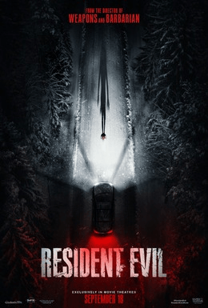

Review · written 25 September 2026
Resident Evil
Let me begin by saying that I am not a fan of the Resident Evil games. While any real gamer will surely be aware of the space the games occupy in video game culture— and indeed, I’ve attempted to play two instalments myself—they’re not something I ever got into. I do, however, like horror movies, and I reasonably enjoyed Zach Cregger's last movie, “Weapons”, so I decided to check this one out to see if it was as good as the reviews would have me believe.
However, coming out of it having seen the 8s, 9s, and even 10s it was receiving, even from reviewers whose opinion I generally align with, really reinforced a question I’ve been asking myself a lot recently: Is my bar too high, or is their bar too low?
Let’s start with the good:
I enjoyed the general premise: a courier needs to deliver something important and is faced with dangerous obstacles along the way. I thought this worked well for a survival-horror scenario as it heightened the urgency and provided a plausible explanation for why anyone might walk “toward” danger rather than away from it—even if that means encountering monsters along the way. I also really enjoyed the snowy countryside setting. It creates an isolating atmosphere that other horror pictures ought to exploit more imo (à la Carpenter's “the Thing”). As anyone who has been in the middle of nowhere, in the snow, in the dark, with no light will know: that is a genuinely terrifying experience in and of itself. I also enjoyed most of the production design, the cinematography, and the score — if a little bland (though a bland score can mean it suited its purpose nicely!).
And now for the gripes:
Starting off on a bit of a meta level, I felt like this film was a perfect example of the often-invoked concept of "treating the audience like they are dumb". While this notion is often cited as an argument for films with "complicated scripts" (e.g., Inception), I tend to feel it has little to do with a story’s complexity at all. It’s more about how information is generally delivered to the audience (whether through dialogue, editing, photography, etc.). In this film, this “dumbed-down” character was expressed through the protagonist’s constant commentary on his actions, feelings, and circumstances. For example, a Zombie runs at him, and he frantically fires a gun at it several times. After successfully hitting it, he gets into his car and attempts to drive away, only to realise the engine won't start. Upon investigation, he identifies bullet holes in his car’s hood, realising that some of the shots he fired earlier must have hit his car and damaged it. That. is. enough. I think everyone is intelligent enough to infer what occurred given that sequence of events. Yet, the protagonist then proceeds to exclaim (to himself) something like: “Omg, who shot my car?!.…..oh…...shit”. BADUM-TS.
It's moments like these that felt pervasive throughout the film, and what annoyed me most was that stripping all that commentary could have easily elevated the film to a 7/10. Generally, if the main protagonist had said 80% less, and we had instead been there, in the moment, experiencing the movie through his facial expressions, subtle behavioural cues and the scariness of utter silence, I would've found it MUCH more captivating and spooky. Yes, I speak to myself sometimes, too, but to do it constantly, to do it when there is obviously danger imminent, and any noise could possibly cost you your life, is just downright stupid and annoying. As a closing example for this complaint: our protagonist faces three different padlocks over the course of his journey, and that, in itself, could have been a funny recurring gag. But instead of having him say this out loud for a third time: “Goddamnit! Again? What is it with all of these locks?”. I think revealing this with a simple shot of the padlock and the character’s frustrated reaction could have been much funnier
I have now read several unfavourable reviews that specifically identify the film’s excessive comedic elements as resulting in a lack of immersion that “breaks the tension”. I personally find that comedy and horror can create a very interesting combination and be very effective (e.g., Obsession), for instance, by calling into question the viewer's morality by confronting them with something audiences usually shouldn't laugh at, but may be funny in context. Evoking thoughts such as: “Can I laugh at this? Is it okay to laugh about this situation?”. Here, however, I do agree that the comedy was quite painful. I understand that my humour doesn't align with the standard Badum-Ts that others enjoy, but not eliciting even a slight chuckle despite the persistent jokes is quite a feat. Not only that, but in some areas, the attempt to create a funny atmosphere made the world feel unnatural and the events taking place seem inconsequential. For example, throughout the film, it becomes increasingly clear that a biological pathogen caused this outbreak and that it could become a national or even international crisis. Yet when we meet an authority responsible for resolving this, they handle multiple deaths and their own prospect of dying with an oddly lax attitude.
From a more niche film-making perspective, I have a question for horror directors out there. When you include POV-type shots in your films, why do you turn the camera extremely slowly? As in, if I were this character, why would I look around corners at an absolute snail's pace if there's a possibility of a man-eating monster lurking in the darkness? Would it not be much scarier (and more realistic!) if the character tried to rush through, rather than slog through, creepy areas, only to be caught out by something terrifying? Just a thought.
Overall, I want to end this review with a reminder that 5/10 means “perfectly average”, and that is my assessment when balancing the good and the bad. I know that today “7/10” is often used to score films that are seen as “average”, but that just doesn’t make any sense and, in my opinion, dilutes the accuracy of reviews. But that is a gripe for another day.
Poster: © Columbia Pictures / Sony Pictures Releasing.